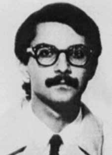

Luiz
Eduardo
da Rocha
Merlino
CIRCUNSTÂNCIAS DA MORTE
Luiz Eduardo da Rocha Merlino foi preso no dia 15 de julho de 1971 na casa de sua mãe, em Santos, por homens que se apresentaram a ele como agentes da OBAN. Tanto Luiz Eduardo quanto sua companheira, Ângela Maria Mendes de Almeida, que se encontrava na França na época, militavam no POC, organização que no período era monitorada pela OBAN, conforme atesta relatório do II Exército, de 5 de julho de 1971. Luiz Eduardo morreu no dia 19 de julho de 1971. Apesar da certidão de óbito, expedida por autoridade competente, registrar a data da morte no dia 19 de julho de 1971, a família de Merlino somente foi informada sobre sua morte na noite do dia seguinte. Conforme versão apresentada na ocasião pelos órgãos de repressão, reproduzida em informe do Serviço Nacional de Informações (SNI) de 1º de agosto de 1979, a morte teria sido causada por atropelamento em tentativa de fuga, enquanto o militante era transportado para o Rio Grande do Sul, onde deveria reconhecer companheiros de organização. Segundo essa versão oficial, Merlino teria morrido após ter escapado da guarda que o conduzia e se atirado embaixo de um veículo, na BR-116, na altura de Jacupiranga (SP). O documento através do qual foi feita a requisição de laudo necroscópico do corpo de Merlino, ao narrar o histórico do caso, declara que “(…) no dia e hora supra mencionados [19/07/71 – 19h30min – BR-116 Jacupiranga] ao fugir da escolta que o levava para Porto Alegre, RS, na estrada BR-116 foi atropelado e em consequência dos ferimentos faleceu”. O exame necroscópico do corpo de Merlino, assinado pelos médicos-legistas Isaac Abramovitc e Abeylard de Queiroz Orsini, apontou como causa mortis anemia aguda traumática (por ruptura da artéria ilíaca direita). Quanto ao preenchimento do item do laudo que questionava se a morte havia sido provocada por tortura ou outro meio insidioso ou cruel, os peritos responderam negativamente. A certidão de óbito foi assinada pelo legista Isaac Abramovitc, tendo como declarante o delegado do Departamento de Ordem Política e Social (DOPS) Alcides Cintra Bueno Filho. Esse documento indica como causa da morte “anemia aguda traumática”. Há muitas evidências da falsidade da versão de atropelamento em tentativa de fuga. Diversos presos políticos testemunharam que Merlino foi conduzido para a sede do DOI-CODI/SP e submetido a sessão de tortura que durou em torno de 24 horas seguidas. Em depoimento à Comissão da Verdade do Estado de São Paulo (CEV-SP) na audiência pública de 13 de dezembro de 2013 sobre o caso de Merlino, Leane Ferreira de Almeida, presa no mesmo dia que Merlino, e também torturada no pau de arara, afirmou que “[…] os torturadores do dia eram o Ustra com certeza, e esse outro o […] [Maurício Lourival] Gaeta”. Eleonora Menicucci de Oliveira, torturada junto com Merlino, confirmou “[…] a presença do [Carlos Alberto Brilhante] Ustra na sala de tortura, do J.C. [Dirceu Gravina] e do Ubirajara [Aparecido Laertes Calandra], que ora torturavam Nicolau [Luiz Eduardo Merlino] no pau de arara, ora a mim na cadeira do dragão”. Em testemunho posterior, Eleonora complementou: O Nicolau tinha uma ferida enorme, quadrada, retangular, na perna, sangrava muito. Muito! E mesmo assim, ele continuava tomando muito choque, muito chute, muita tortura. E eu, na cadeira do dragão. […] depois, muito tempo depois, já na Escola Paulista de Medicina, isso vinha à minha cabeça, e meus colegas, médicos, diziam, “Como é que estava a ferida?”, eu dizia “Preta. Sangrando, mas já estava… Já estava gangrenando.” Ieda Akselrud de Seixas, que também estava presa quando da tortura de Merlino, relatou: […] eu lembro que o Merlino foi torturado a noite inteira, não houve, se dava alguma folga foi, de certo, para eles descansarem, eu não sei. No outro dia de manhã, o [Maurício Lourival] Gaeta […] apareceu na porta da cela e perguntou o que nós estávamos fazendo ali. […] “O que vocês estão fazendo aí, porra?” Nós estamos aqui porque nos trouxeram, aí tiraram o Merlino da sala, ele estava no colo, e eu lembro de que me chamou a atenção porque o Merlino, pelo que parece, era muito míope, não é? Então ele fazia assim para enxergar, aí o cara chegou e disse assim, “Ele não está fazendo xixi”, aí ele disse assim, “porra, mas esse cara é difícil, ele parece o Arrudão”, o Diógenes Arruda, o militante do PCzão “porque ele não fala, não tem jeito, ele não fala, o Arrudão, eu arrebentei meu relógio de tanto torturar ele e ele não falou, e esse cara está pensando que ele é quem? Ele não vai acabar bem, não.” Mas assim, a naturalidade, ele parado ali na porta, “pode deixar que eu já vou lá resolver isso porque hoje ele vai falar de qualquer jeito.” Ivan Ankselrud Seixas, que estava preso em uma cela ao lado da sala onde Merlino foi torturado, declarou na mesma audiência pública da CEV-SP que, depois de ouvir a noite inteira a tortura de Merlino, viu “[…] o Ustra comandando a retirada e a limpeza da cela de tortura, e ele dizia, „traz ele para cá, põe ele aqui, limpa lá o sangue, limpa lá essa porcaria, limpa isso, limpa aquilo‟. E os torturadores, que tinham muito medo também do Ustra, iam rapidamente limpando tudo”. Depois de ser retirado da sala de tortura, apesar de se queixar de fortes dores nas pernas – consequência da longa permanência no pau de arara –, Merlino foi abandonado sem qualquer atendimento médico em uma cela da carceragem conhecia à época como “celaforte” ou “X-zero”. De acordo com o depoimento prestado por Guido Rocha, ex-preso político que esteve preso junto a Merlino, “X-zero” era uma cela quase totalmente escura, sem janelas, de chão de cimento, em cujo chão havia um colchão sujo de sangue. Guido contou que estava na cela no momento em que os policiais levaram Merlino, após o terem submetido a longa sessão de tortura, e que Merlino chegou à cela carregado, muito machucado, mas que se mantinha calmo. Seu estado de saúde começou a piorar: as pernas ficaram dormentes e para utilizar a privada, Merlino tinha que ser carregado. Sem conseguir se levantar, foi ainda acareado deitado, com outro preso levado para a cela com essa finalidade. Guido Rocha e outros ex-presos políticos relataram que, diante da piora do estado de saúde de Merlino, os agentes do Destacamento de Operações de Informações – Centro de Operações de Defesa Interna (DOI-CODI) o levaram para um pátio em frente à cela, onde um agente que se dizia enfermeiro começou a aplicar massagens em suas pernas. A massagem, aplicada pelo suposto enfermeiro – que era conhecido como “Boliviano” ou “Índio”–, foi testemunhada por diferentes presos políticos. O ex-capitão do Exército e hoje coronel reformado, Pedro Ivo Moezia de Lima, confirmou em depoimento à Comissão Nacional da Verdade (CNV) em 9 de setembro de 2014 que esse enfermeiro de traços indígenas integrava a equipe do DOI-CODI à época. De acordo com a denúncia detalhada à Ordem dos Advogados do Brasil (OAB), efetuada pelos presos políticos do Presídio da Justiça Militar Federal de São Paulo, de 1975, o enfermeiro “Índio” era do Exército e do estado do Acre. O mesmo documento descreve que, quando da referida massagem, “suas nádegas [de Merlino] estavam em carne viva e suas pernas tinham feridas e extensos hematomas”. Uma das testemunhas, Paulo de Tarso Vannuchi, que era estudante de medicina, observou que a perna de Merlino tinha a cor da cianose, indicando risco de gangrena. Depois da massagem nas pernas, Merlino foi reconduzido à cela de Guido Rocha, onde os agentes da repressão fizeram um teste de reflexo em seu joelho, sem obter resposta alguma: […] Vieram, fizeram o teste de reflexo no joelho e não tinha resposta nenhuma. O enfermeiro ficou perturbado com isso e não sabia o que fazer. Eu falei: o estado dele é grave, acho que convém levar para o hospital. O enfermeiro ficou irritado comigo, disse que ele é que sabia, que já tinha recuperado outros presos políticos, que estavam em estado muito pior do que aquele, que aquilo não era nada para ele. Fechou a porta. […] Depois que fecharam a porta, Merlino começou a piorar muito, logo em seguida. À noite começou a se sentir mal, estava bem pior. Eu tinha conseguido uma pêra e dei a ele. Porque ele rejeitava tudo, não comia nada. Eu não me lembro dele ter comido nem uma vez… porque ele tentava comer e vomitava sangue. Aí ele começou a mudar, a ficar nervoso, falou que estava piorando… vomitou sangue outra vez. Eu tentei acalmá-lo. Ele pediu que eu o colocasse sentado. Merlino nunca ficou em pé desde o primeiro dia. Bem, eu tentei acalmá-lo, comecei a dizer a ele para respirar fundo, fazer a respiração de ioga, manter um pouco de calma. Mas ele ficou muito nervoso e falou: “chama o enfermeiro rápido que eu estou muito mal, a dormência está subindo, está nas duas pernas e nos braços também”. Aí eu bati na porta com força e gritei e vieram o enfermeiro e alguns torturadores, policiais, os mesmos que já haviam me torturado e torturado a ele também. Vieram e o levaram. Agora vou dar um detalhe que pode levar a alguma prova de alguma coisa. Na hora que eles saíram, de madrugada, eu estava muito arrebentado, e eu imediatamente deitei. Eu deitei e eles fizeram uma troca de sapatos. Levaram os meus sapatos e deixaram o dele; pode ser que entregaram à família dele sapatos que não eram dele. Leane Ferreira de Almeida afirmou à CEV-SP que, da cela onde estava presa, viu Merlino, ou seu corpo – não sabe dizer se estava vivo ou já morto – sendo colocado no porta-malas de um carro. Merlino provavelmente foi levado ao Hospital Geral do Exército entre os dias 18 e 19, onde faleceu. De acordo com o testemunho de Otacílio Guimarães Cecchini, que também estava preso no DOI-CODI no mesmo período, durante o seu interrogatório: entra um militar, com traje de civis, ele entra e diz que havia um telefonema, se dirigindo ao Ustra, que tinha um telefonema do hospital, não fala qual hospital, que os médicos estavam pedindo contato com a família do Merlino. Pedindo contato porque haveria a necessidade de uma amputação. Isso condiz com o que foi relatado por um torturador (“Oberdan” ou “Zé Bonitinho”) a Joel Rufino dos Santos, conforme relato deste à CEV-SP: […] a penúltima vez que eu soube do Merlino, foi um torturador, Oberdan, que aparece em todas as listas de torturadores. Oberdan, a uma certa altura, me dando porrada parou e puxou uma conversa sem vergonha, como eles às vezes faziam depois de bater, de aplicar choques, vinham com conversas. O Oberdan me disse assim, “seu amigo esteve aqui”. Que amigo? Aí ele me contou a versão da morte do Merlino. […] Ele me disse o seguinte, “olha, seu amigo esteve aqui e ele quis dar uma de durão, acabou com as pernas gangrenadas e foi levado para o Hospital do Exército”. Ele disse Hospital do Exército exatamente. “E de lá telefonaram dizendo que precisavam amputar as pernas dele para ele sobreviver. O Major Ustra fez aqui uma votação, eu votei”, diz ele, o torturador, “votei para amputarem as pernas e salvarem a vida dele, mas fui voto vencido”. Vê a conversa do cara. “E venceu a ideia de deixar ele morrer. Foi assim que seu amigo que esteve aqui morreu”. A família de Merlino, tão logo soube da sua morte, dirigiu-se ao Instituto Médico-Legal de São Paulo (IML/SP). O funcionário responsável informou que o corpo de Luiz Eduardo não se encontrava no local. Entretanto, o marido de Regina Merlino, irmã de Luiz Eduardo, Adalberto Dias de Almeida, que era delegado de polícia, conseguiu vencer a vigilância e, ingressando no IML, encontrou o corpo de Luiz Eduardo com sinais de tortura. Apesar da censura, o jornal A Tribuna, de Santos, publicou uma matéria a respeito do seu falecimento no dia 27 de agosto de 1971. Em um trecho da notícia foi citado o despacho enviado de Paris pela Agência Reuters, uma semana antes, comunicando que Merlino havia sido preso pelas autoridades de Segurança Nacional do Brasil. Na mesma data, O Estado de S. Paulo publicou uma nota convidando “(…) os jornalistas brasileiros e o povo em geral para a missa de trigésimo dia do seu falecimento, a realizar-se dia 28 de agosto, na Catedral da Sé, em São Paulo”. A missa contou com a presença de jornalistas e amigos da família. A companheira de Luiz Eduardo, Ângela Mendes de Almeida, condenada pela justiça militar, não pôde comparecer ao evento. De acordo com a irmã de Luiz Eduardo, Regina Merlino, havia entre os presentes muitos policiais armados e, inclusive, em mais uma demonstração de arrogância e desrespeito, os mesmos três homens que haviam efetuado a prisão de Merlino em sua casa foram dar os pêsames à família. O corpo de Luiz Eduardo da Rocha Merlino foi enterrado no cemitério de Paquetá, em Santos, São Paulo. Na década de 1990, o laudo de necropsia de Luiz Eduardo foi analisado, a pedido da Comissão de Familiares de Mortos e Desaparecidos Políticos, pelo médico Antenor Chicarino. O médico verificou que a fotografia constante do laudo revelava manchas roxas no braço direito, no nariz e na testa, compatíveis com as causadas por instrumentos de tortura, as quais não foram apontadas no laudo. Observou ainda que as lesões compatíveis com marcas de pneus estão localizadas na sola dos pés, pernas, nádegas, cotovelos e braços de Merlino, e que as escoriações na sola dos pés não seriam explicáveis, tendo em vista que Merlino estava calçado com botas de couro. O médico Dolmevil, por sua vez, destacou, em complemento, inchaço no lábio inferior e uma mancha roxa horizontalizada paralela em toda a linha de implantação dos cabelos, na região frontal. Os documentos de declaração de preso de Merlino, datados de 17 a 19 de julho, atestam que ele foi interrogado pelas equipes preliminares A e B do DOI-CODI/SP. A equipe de perícia da CNV compareceu ao setor Departamento Estadual de Ordem Política e Social (DEOPS) no Arquivo Público de São Paulo e localizou um Termo de Declarações de Luiz Eduardo Rocha dos dias 17/18 de julho de 1971, com o nº 04841 impresso, constante da pasta 50-Z-0009 documentos 207000 e 20701, com uma rubrica na parte superior direita junto ao carimbo “II EXERCITO CODI” e uma rubrica próxima à margem esquerda (documentos do mesmo dia, com a mesma numeração dos apresentados para exame). As rubricas apostas junto ao carimbo do “II EXERCITO” foram identificadas como sendo do capitão Ênio Pimentel da Silveira, então chefe substituto da Seção de Investigação do DOI-CODI do II Exército. Em 8 de setembro de 2014, a CNV enviou ofício ao Hospital Militar da Área de São Paulo, requerendo cópia de prontuário médico e de outros registros eventualmente existentes acerca de Merlino, bem como solicitando que fossem informados os nomes dos médicos que fizeram plantão no período em que Merlino esteve internado. O pedido foi reiterado em 18 de novembro de 2014. De acordo com a resposta do diretor do hospital, coronel Arno Ribeiro Jardim Junior, recebida em 27 de novembro de 2014, “[…] não foram encontrados registros nosológicos do Sr Luiz Eduardo da Rocha Melino nesta Organização Militar de Saúde”.
Luiz Eduardo da Rocha Merlino was arrested on July 15, 1971 at his mother's house, in Santos, by men who introduced themselves to him as OBAN agents. Both Luiz Eduardo and his companion, Ângela Maria Mendes de Almeida, who was in France at the time, were members of the POC, an organization that was monitored by OBAN at the time, as evidenced by a report from the II Army, dated July 5, 1971. Luiz Eduardo died on July 19, 1971. Despite the death certificate, issued by the competent authority, recording the date of death on July 19, 1971. 1971, Merlino's family was only informed about his death on the evening of the following day. According to the version presented at the time by the repression bodies, reproduced in a report from the National Information Service (SNI) on August 1, 1979, the death would have been caused by being run over in an attempt to escape, while the militant was transported to Rio Grande do Sul, where he was supposed to recognize fellow members of the organization. According to this official version, Merlino died after escaping from the guard who was driving him and throwing himself under a vehicle, on BR-116, near Jacupiranga (SP). The document through which the request for a necroscopic report on Merlino's body was made, when narrating the history of the case, states that “(…) on the day and time mentioned above [07/19/71 – 7:30 pm – BR-116 Jacupiranga] when fleeing from the escort that was taking him to Porto Alegre, RS, on the BR-116 road, he was run over and as a result of his injuries he died”. The necroscopic examination of Merlino's body, signed by coroners Isaac Abramovitc and Abeylard de Queiroz Orsini, indicated acute traumatic anemia (due to rupture of the right iliac artery) as the cause of death. Regarding the completion of the item in the report that questioned whether the death had been caused by torture or other insidious or cruel means, the experts responded negatively. The death certificate was signed by coroner Isaac Abramovitc, with the delegate from the Department of Political and Social Order (DOPS) Alcides Cintra Bueno Filho as the declarant. This document indicates “acute traumatic anemia” as the cause of death. There is a lot of evidence of the falsehood of the version of being run over in an attempt to escape. Several political prisoners testified that Merlino was taken to the DOI-CODI/SP headquarters and subjected to a torture session that lasted around 24 hours straight. In testimony to the Truth Commission of the State of São Paulo (CEV-SP) at the public hearing on December 13, 2013 on Merlino's case, Leane Ferreira de Almeida, arrested on the same day as Merlino, and also tortured on the macaw stick, stated that “[…] the torturers of the day were Ustra for sure, and this other one was […] [Maurício Lourival] Gaeta”. Eleonora Menicucci de Oliveira, tortured together with Merlino, confirmed “[…] the presence of [Carlos Alberto Brilhante] Ustra in the torture room, J.C. [Dirceu Gravina] and Ubirajara [Aparecido Laertes Calandra], who were sometimes torturing Nicolau [Luiz Eduardo Merlino] on the macaw's stick, and sometimes me on the dragon's chair”. In later testimony, Eleonora added: Nicolau had a huge, square, rectangular wound on his leg, it was bleeding a lot. Very! And even so, he continued to receive a lot of shocks, a lot of kicks, a lot of torture. And me, in the dragon's chair. […] later, a long time later, already at the Escola Paulista de Medicina, this came to my mind, and my colleagues, doctors, said, “How was the wound?”, I said “Black. Bleeding, but it was already… It was already gangrenous.” Ieda Akselrud de Seixas, who was also imprisoned at the time of Merlino's torture, reported: [...] I remember that Merlino was tortured all night, there wasn't any, if there was any time off it was certainly for them to rest, I don't know. The other morning, [Maurício Lourival] Gaeta […] appeared at the cell door and asked what we were doing there. […] “What are you fucking doing there?” We are here because they brought us, then they took Merlino out of the room, he was on their lap, and I remember that it caught my attention because Merlino, apparently, was very myopic, right? So he did this to see, then the guy arrived and said, “He's not peeing”, then he said, “fuck, but this guy is difficult, he looks like Arrudão”, Diógenes Arruda, the PCzão activist “because he doesn't talk, there's no way, he doesn't talk, Arrudão, I broke my watch by torturing him so much and he didn't talk, and this guy is thinking who is he? He's not going to end well, no.” But naturally, he was standing there at the door, “you can let me go there and sort it out because today he’s going to talk anyway.” Ivan Ankselrud Seixas, who was imprisoned in a cell next to the room where Merlino was tortured, declared at the same CEV-SP public hearing that, after listening all night to Merlino's torture, he saw “[…] the Ustra commanding the removal and cleaning of the torture cell, and he said, 'bring him here, put him here, clean the blood there, clean this rubbish, clean this, clean that'. And the torturers, who had I was also very afraid of Ustra, they were quickly cleaning everything up.” After being removed from the torture room, despite complaining of severe pain in his legs – a consequence of the long stay in the pau de arara –, Merlino was abandoned without any medical attention in a prison cell known at the time as “celaforte” or “X-zero”. According to the testimony given by Guido Rocha, a former political prisoner who was imprisoned alongside Merlino, “X-zero” was an almost completely dark cell, without windows, with a cement floor, on the floor of which there was a mattress stained with blood. Guido said that he was in the cell when the police took Merlino, after subjecting him to a long session of torture, and that Merlino arrived at the cell loaded, very injured, but that he remained calm. His health began to worsen: his legs became numb and to use the toilet, Merlino had to be carried. Unable to get up, he was still confronted while lying down, with another prisoner taken to the cell for this purpose. Guido Rocha and other former political prisoners reported that, given Merlino's worsening health condition, agents from the Information Operations Detachment - Internal Defense Operations Center (DOI-CODI) took him to a courtyard in front of the cell, where an agent claiming to be a nurse began massaging his legs. The massage, applied by the supposed nurse – who was known as “Bolivian” or “Indian” – was witnessed by different political prisoners. The former Army captain and now retired colonel, Pedro Ivo Moezia de Lima, confirmed in a statement to the National Truth Commission (CNV) on September 9, 2014 that this nurse with indigenous traits was part of the DOI-CODI team at the time. According to the detailed complaint to the Brazilian Bar Association (OAB), made by political prisoners at the Federal Military Justice Prison of São Paulo, in 1975, the nurse “Índio” was from the Army and from the state of Acre. The same document describes that, during the aforementioned massage, “his [Merlino’s] buttocks were raw and his legs had wounds and extensive bruises”. One of the witnesses, Paulo de Tarso Vannuchi, who was a medical student, observed that Merlino's leg had the color of cyanosis, indicating a risk of gangrene. After the leg massage, Merlino was taken back to Guido Rocha's cell, where the repression agents did a reflex test on his knee, without getting any response: […] They came, did the knee reflex test and there was no response. The nurse was disturbed by this and didn't know what to do. I said: his condition is serious, I think he should be taken to the hospital. The nurse got angry with me, he said that he was the one who knew, that he had already recovered other political prisoners, who were in a much worse condition than that, that it was nothing to him. He closed the door. […] After they closed the door, Merlino started to get much worse soon after. At night he started to feel bad, it was much worse. I had gotten a pear and gave it to him. Because he rejected everything, he didn't eat anything. I don't remember him eating even once... because he tried to eat and vomited blood. Then he started to change, to get nervous, he said it was getting worse… he vomited blood again. I tried to calm him down. He asked me to sit him down. Merlino never stood up from day one. Well, I tried to calm him down, I started telling him to take deep breaths, do yoga breathing, stay a little calm. But he got very nervous and said: “call the nurse quickly because I'm really sick, the numbness is rising, it's in both legs and in my arms too”. Then I knocked hard on the door and screamed and the nurse came and some torturers, police officers, the same ones who had already tortured me and him too. They came and took him. Now I'm going to give a detail that may lead to some proof of something. By the time they left, in the early hours of the morning, I was very exhausted, and I immediately lay down. I lay down and they changed shoes. They took my shoes and left his; It could be that they gave his family shoes that weren't his. Leane Ferreira de Almeida told CEV-SP that, from the cell where she was being held, she saw Merlino, or his body – she could not say whether he was alive or already dead – being placed in the trunk of a car. Merlino was probably taken to the Army General Hospital between the 18th and 19th, where he died. According to the testimony of Otacílio Guimarães Cecchini, who was also imprisoned at DOI-CODI in the same period, during his interrogation: a military man enters, dressed in civilian clothes, he enters and says that there was a phone call, addressing Ustra, that he had a call from the hospital, he didn't say which hospital, that the doctors were asking for contact with Merlino's family. Asking for contact because there would be a need for an amputation. This is consistent with what was reported by a torturer (“Oberdan” or “Zé Bonitinho”) to Joel Rufino dos Santos, as reported by him to CEV-SP: […] the penultimate time I heard about Merlino, it was a torturer, Oberdan, who appears on all lists of torturers. Oberdan, at a certain point, while beating me, stopped and started a conversation without shame, as they sometimes did after hitting, after applying shocks, they started talking. Oberdan told me, “your friend was here”. What friend? Then he told me the version of Merlino's death. […] He told me the following, “look, your friend was here and he wanted to be tough, he ended up with gangrenous legs and was taken to the Army Hospital”. He said Army Hospital exactly. "And from there they called saying that they needed to amputate his legs so he could survive. Major Ustra held a vote here, I voted", he says, the torturer, "I voted to amputate his legs and save his life, but I was defeated". Watch the guy's conversation. "And the idea of letting him die overcame. That's how your friend who was here died." Merlino's family, as soon as they learned of his death, went to the São Paulo Medical-Legal Institute (IML/SP). The responsible employee reported that Luiz Eduardo's body was not at the scene. However, the husband of Regina Merlino, Luiz Eduardo's sister, Adalberto Dias de Almeida, who was a police chief, managed to overcome the surveillance and, joining the IML, found Luiz Eduardo's body with signs of torture. Despite the censorship, the newspaper A Tribuna, from Santos, published an article about his death on August 27, 1971. In an excerpt of the news, the dispatch sent from Paris by the Reuters Agency, a week earlier, was mentioned, announcing that Merlino had been arrested by the Brazilian National Security authorities. On the same date, O Estado de S. Paulo published a note inviting “(…) Brazilian journalists and the people in general to the mass on the thirtieth day of his death, to be held on August 28th, at the Sé Cathedral, in São Paulo”. The mass was attended by journalists and family friends. Luiz Eduardo's companion, Ângela Mendes de Almeida, convicted by military justice, was unable to attend the event. According to Luiz Eduardo's sister, Regina Merlino, there were many armed police officers among those present and, in yet another demonstration of arrogance and disrespect, the same three men who had arrested Merlino in his home went to offer their condolences to the family. The body of Luiz Eduardo da Rocha Merlino was buried in the Paquetá cemetery, in Santos, São Paulo. In the 1990s, Luiz Eduardo's autopsy report was analyzed, at the request of the Commission for Relatives of the Political Dead and Missing, by doctor Antenor Chicarino. The doctor verified that the photograph in the report revealed purple spots on the right arm, nose and forehead, compatible with those caused by torture instruments, which were not mentioned in the report. He also observed that the injuries compatible with tire marks are located on the soles of Merlino's feet, legs, buttocks, elbows and arms, and that the abrasions on the soles of his feet would not be explainable, considering that Merlino was wearing leather boots. Doctor Dolmevil, in turn, highlighted, in addition, swelling in the lower lip and a parallel horizontal purple spot along the entire hairline, in the frontal region. Merlino's arrest declaration documents, dated July 17th to 19th, attest that he was interrogated by preliminary teams A and B of DOI-CODI/SP. The CNV forensic team attended the State Department of Political and Social Order (DEOPS) sector at the São Paulo Public Archive and located a Statement of Declarations by Luiz Eduardo Rocha dated July 17/18, 1971, with printed number 04841, contained in folder 50-Z-0009 documents 207000 and 20701, with an initial in the upper right part next to the stamp “II EXERCITO CODI” and a heading close to the left margin (documents from the same day, with the same numbering as those presented for examination). The headings placed next to the “II ARMY” stamp were identified as belonging to Captain Ênio Pimentel da Silveira, then deputy head of the DOI-CODI Investigation Section of the II Army. On September 8, 2014, the CNV sent a letter to the Military Hospital of the São Paulo Area, requesting a copy of the medical records and other records that may exist about Merlino, as well as requesting that the names of the doctors who were on duty during the period in which Merlino was hospitalized be informed. The request was reiterated on November 18, 2014. According to the response from the hospital director, Colonel Arno Ribeiro Jardim Junior, received on November 27, 2014, “[…] no nosological records of Mr Luiz Eduardo da Rocha Melino were found in this Military Health Organization”.
Luiz Eduardo da Rocha Merlino fue detenido el 15 de julio de 1971 en la casa de su madre, en Santos, por hombres que se presentaron ante él como agentes de la OBAN. Tanto Luiz Eduardo como su compañera, Ângela Maria Mendes de Almeida, que se encontraba en ese momento en Francia, eran miembros del POC, organización que era monitoreada por la OBAN en ese momento, como lo demuestra un informe del II Ejército, de fecha 5 de julio de 1971. Luiz Eduardo falleció el 19 de julio de 1971. A pesar del certificado de defunción, expedido por la autoridad competente, que registra la fecha de muerte el 19 de julio de 1971. En 1971, la familia de Merlino no fue informada de su muerte hasta la tarde del día siguiente. Según la versión presentada en su momento por los órganos de represión, reproducida en un informe del Servicio Nacional de Información (SNI) del 1 de agosto de 1979, la muerte habría sido provocada por un atropello en un intento de fuga, mientras el militante era trasladado a Rio Grande do Sul, donde debía reconocer a sus compañeros de la organización. Según esta versión oficial, Merlino murió después de escapar del guardia que lo conducía y arrojarse debajo de un vehículo, en la BR-116, cerca de Jacupiranga (SP). El documento mediante el cual se realizó la solicitud de informe necroscópico sobre el cuerpo de Merlino, al narrar la historia del caso, señala que “(…) en el día y hora antes mencionados [19/07/71 – 19:30 – BR-116 Jacupiranga] al huir de la escolta que lo llevaba a Porto Alegre, RS, por la carretera BR-116, fue atropellado y a consecuencia de sus heridas falleció”. El examen necroscópico del cuerpo de Merlino, firmado por los forenses Isaac Abramovitc y Abeylard de Queiroz Orsini, indicó como causa de la muerte una anemia traumática aguda (por rotura de la arteria ilíaca derecha). Respecto a la finalización del ítem del informe que cuestionaba si la muerte había sido causada por tortura u otros medios insidiosos o crueles, los peritos respondieron negativamente. El certificado de defunción fue firmado por el médico forense Isaac Abramovitc, teniendo como declarante el delegado del Departamento de Orden Político y Social (DOPS), Alcides Cintra Bueno Filho. Este documento señala “anemia traumática aguda” como causa de muerte. Hay muchas evidencias de la falsedad de la versión de haber sido atropellado en un intento de fuga. Varios presos políticos declararon que Merlino fue llevado a la sede del DOI-CODI/SP y sometido a una sesión de tortura que duró alrededor de 24 horas seguidas. En testimonio ante la Comisión de la Verdad del Estado de São Paulo (CEV-SP) en la audiencia pública del 13 de diciembre de 2013 sobre el caso Merlino, Leane Ferreira de Almeida, arrestada el mismo día que Merlino, y también torturada con el palo de guacamayo, afirmó que “[…] los torturadores del día eran seguramente Ustra, y este otro era […] [Maurício Lourival] Gaeta”. Eleonora Menicucci de Oliveira, torturada junto con Merlino, confirmó “[…] la presencia de [Carlos Alberto Brilhante] Ustra en la sala de torturas, J.C. [Dirceu Gravina] y Ubirajara [Aparecido Laertes Calandra], quienes a veces torturaban a Nicolau [Luiz Eduardo Merlino] en el palo de la guacamaya, y a veces a mí en la silla del dragón”. En un testimonio posterior, Eleonora añadió: Nicolau tenía una herida enorme, cuadrada y rectangular, en la pierna, sangraba mucho. ¡Muy! Y aun así siguió recibiendo muchos golpes, muchas patadas, muchas torturas. Y yo, en la silla del dragón. […] después, mucho tiempo después, ya en la Escola Paulista de Medicina, me vino a la mente esto, y mis compañeros, los médicos, dijeron: “¿Cómo estuvo la herida?”, dije “Negra, sangrando, pero ya estaba… Ya estaba gangrenosa”. Ieda Akselrud de Seixas, que también estaba encarcelada en el momento de la tortura de Merlino, informó: [...] Recuerdo que a Merlino lo torturaron toda la noche, no hubo, si hubo algún tiempo libre seguramente fue para que descansaran, no lo sé. La otra mañana, [Maurício Lourival] Gaeta […] apareció en la puerta de la celda y preguntó qué hacíamos allí. […] “¿Qué carajo estás haciendo ahí?” Estamos aquí porque nos trajeron, luego sacaron a Merlino del cuarto, estaba en sus piernas, y recuerdo que me llamó la atención porque Merlino, al parecer, era muy miope, ¿no? Entonces hizo esto para ver, luego llegó el tipo y dijo: “No está orinando”, luego dijo: “joder, pero este tipo es difícil, se parece a Arrudão”, Diógenes Arruda, activista del PCzão “porque no habla, no hay manera, no habla, Arrudão, se me rompió el reloj torturándolo tanto y no habló, y este tipo está pensando ¿quién es? No va a terminar bueno, no”. Pero naturalmente, él estaba parado allí en la puerta, “puedes dejarme ir allí y solucionarlo porque hoy va a hablar de todos modos”. Ivan Ankselrud Seixas, que estaba encarcelado en una celda contigua a la habitación donde Merlino fue torturado, declaró en la misma audiencia pública del CEV-SP que, después de escuchar toda la noche las torturas de Merlino, vio “[…] a la Ustra ordenando el retiro y limpieza de la celda de tortura, y dijo, 'tráelo aquí, ponlo aquí, limpia la sangre allá, limpia esta basura, limpia esto, limpia aquello'. Y los torturadores, que tenían también tenía mucho miedo de Ustra, rápidamente limpiaron todo”. Tras ser sacado de la sala de torturas, a pesar de quejarse de fuertes dolores en las piernas –consecuencia de la larga estancia en el pau de arara–, Merlino fue abandonado sin atención médica alguna en una celda de la prisión conocida entonces como “celaforte” o “X-zero”. Según el testimonio de Guido Rocha, ex preso político que estuvo preso junto a Merlino, “X-cero” era una celda casi completamente oscura, sin ventanas, con piso de cemento, sobre cuyo piso había un colchón manchado de sangre. Guido dijo que estaba en la celda cuando la policía se llevó a Merlino, después de someterlo a una larga sesión de tortura, y que Merlino llegó a la celda cargado, muy herido, pero que mantuvo la calma. Su salud empezó a empeorar: se le entumecieron las piernas y para ir al baño había que cargar a Merlino. Al no poder levantarse, lo confrontaron mientras yacía y otro preso fue llevado a la celda a tal efecto. Guido Rocha y otros ex presos políticos denunciaron que, ante el empeoramiento del estado de salud de Merlino, agentes del Destacamento de Operaciones de Información - Centro de Operaciones de Defensa Interna (DOI-CODI) lo llevaron a un patio frente a la celda, donde un agente que dijo ser enfermero comenzó a masajearle las piernas. El masaje, aplicado por la supuesta enfermera -a quien se conocía como “boliviana” o “india”- fue presenciado por distintos presos políticos. El excapitán del Ejército y ahora coronel retirado, Pedro Ivo Moezia de Lima, confirmó en declaraciones a la Comisión Nacional de la Verdad (CNV) el 9 de septiembre de 2014 que esta enfermera de rasgos indígenas formaba parte del equipo DOI-CODI en ese momento. Según la detallada denuncia ante la Asociación de Abogados de Brasil (OAB), presentada por presos políticos en la Cárcel Federal de Justicia Militar de São Paulo, en 1975, el enfermero “Índio” era del Ejército y del estado de Acre. El mismo documento describe que, durante el mencionado masaje, “sus nalgas [de Merlino] estaban en carne viva y sus piernas presentaban heridas y grandes hematomas”. Uno de los testigos, Paulo de Tarso Vannuchi, que era estudiante de medicina, observó que la pierna de Merlino tenía el color de la cianosis, lo que indicaba riesgo de gangrena. Luego del masaje en las piernas, Merlino fue llevado nuevamente a la celda de Guido Rocha, donde los agentes de represión le hicieron una prueba refleja en la rodilla, sin obtener respuesta: […] Vinieron, le hicieron la prueba refleja en la rodilla y no hubo respuesta. La enfermera estaba preocupada por esto y no sabía qué hacer. Le dije: su estado es grave, creo que deberían llevarlo al hospital. El enfermero se enojó conmigo, dijo que él era el que sabía, que ya había recuperado a otros presos políticos, que estaban en condiciones mucho peores que eso, que para él no era nada. Cerró la puerta. […] Después de que cerraron la puerta, Merlino empezó a empeorar mucho poco después. Por la noche empezó a sentirse mal, era mucho peor. Cogí una pera y se la di. Como rechazó todo, no comió nada. No recuerdo que haya comido ni una sola vez... porque intentó comer y vomitó sangre. Luego empezó a cambiar, a ponerse nervioso, decía que estaba empeorando… volvió a vomitar sangre. Intenté calmarlo. Me pidió que lo sentara. Merlino nunca se levantó desde el primer día. Bueno, traté de calmarlo, comencé a decirle que respirara profundamente, que hiciera respiración yoga, que se mantuviera un poco tranquilo. Pero se puso muy nervioso y dijo: “llame rápido a la enfermera porque estoy muy mal, el entumecimiento está subiendo, está en ambas piernas y en mis brazos también”. Entonces toqué fuerte la puerta y grité y vino la enfermera y unos torturadores, policías, los mismos que ya me habían torturado a mí y a él también. Vinieron y se lo llevaron. Ahora voy a dar un detalle que puede llevar a alguna prueba de algo. Cuando se fueron, en las primeras horas de la mañana, yo estaba muy exhausto e inmediatamente me acosté. Me acosté y se cambiaron de zapatos. Tomaron mis zapatos y dejaron los suyos; Podría ser que a su familia le regalaran unos zapatos que no eran suyos. Leane Ferreira de Almeida dijo al CEV-SP que, desde la celda donde estaba detenida, vio a Merlino o su cuerpo – no podía decir si estaba vivo o ya muerto – siendo colocado en el baúl de un automóvil. Merlino probablemente fue trasladado al Hospital General del Ejército entre los días 18 y 19, donde falleció. Según el testimonio de Otacílio Guimarães Cecchini, también encarcelado en el DOI-CODI en el mismo período, durante su interrogatorio: entra un militar, vestido de civil, entra y dice que hubo una llamada telefónica, dirigiéndose a Ustra, que recibió una llamada del hospital, no dijo de qué hospital, que los médicos pedían contacto con la familia de Merlino. Pidiendo contacto porque sería necesaria una amputación. Esto concuerda con lo relatado por un torturador (“Oberdan” o “Zé Bonitinho”) a Joel Rufino dos Santos, según lo relatado por él a la CEV-SP: […] la penúltima vez que oí hablar de Merlino, fue un torturador, Oberdan, que aparece en todas las listas de torturadores. Oberdan, en cierto momento, mientras me golpeaba, se detuvo y comenzó una conversación sin vergüenza, como hacían a veces después de golpearme, después de aplicarme shocks, comenzaron a hablar. Oberdan me dijo “tu amigo estuvo aquí”. ¿Qué amigo? Luego me contó la versión de la muerte de Merlino. […] Me dijo lo siguiente, “mira, tu amigo estaba aquí y quería ser duro, terminó con las piernas gangrenosas y lo llevaron al Hospital del Ejército”. Dijo exactamente Hospital del Ejército. "Y desde allí llamaron diciendo que tenían que amputarle las piernas para que pudiera sobrevivir. El mayor Ustra hizo una votación aquí, yo voté", dice el torturador, "voté para amputarle las piernas y salvarle la vida, pero fui derrotado". Mira la conversación del chico. "Y la idea de dejarlo morir venció. Así murió tu amigo que estaba aquí". La familia de Merlino, apenas supo de su muerte, acudió al Instituto Médico Legal de São Paulo (IML/SP). El empleado responsable informó que el cuerpo de Luiz Eduardo no se encontraba en el lugar. Sin embargo, el marido de Regina Merlino, hermana de Luiz Eduardo, Adalberto Dias de Almeida, quien era jefe policial, logró sortear la vigilancia y, incorporándose al IML, encontró el cuerpo de Luiz Eduardo con señales de tortura. A pesar de la censura, el diario A Tribuna, de Santos, publicó un artículo sobre su muerte el 27 de agosto de 1971. En un extracto de la noticia se menciona el despacho enviado desde París por la agencia Reuters, una semana antes, anunciando que Merlino había sido arrestado por las autoridades de Seguridad Nacional brasileñas. En la misma fecha, O Estado de S. Paulo publicó una nota invitando “(…) a los periodistas brasileños y al pueblo en general a la misa del trigésimo día de su muerte, que se realizará el 28 de agosto, en la Catedral de la Sé, en São Paulo”. A la misa asistieron periodistas y amigos de la familia. La compañera de Luiz Eduardo, Ângela Mendes de Almeida, condenada por la justicia militar, no pudo asistir al evento. Según la hermana de Luiz Eduardo, Regina Merlino, entre los presentes había muchos policías armados y, en una nueva muestra de arrogancia y falta de respeto, los mismos tres hombres que habían detenido a Merlino en su casa fueron a dar el pésame a la familia. El cuerpo de Luiz Eduardo da Rocha Merlino fue enterrado en el cementerio de Paquetá, en Santos, São Paulo. En la década de 1990, el informe de la autopsia de Luiz Eduardo fue analizado, a pedido de la Comisión de Familiares de Muertos y Desaparecidos Políticos, por el médico Antenor Chicarino. El médico comprobó que la fotografía del informe revelaba manchas moradas en el brazo derecho, nariz y frente, compatibles con las provocadas por instrumentos de tortura, que no fueron mencionadas en el informe. También observó que las lesiones compatibles con marcas de neumáticos se localizan en las plantas de los pies, piernas, nalgas, codos y brazos de Merlino, y que las abrasiones en las plantas de los pies no serían explicables, considerando que Merlino usaba botas de cuero. El doctor Dolmevil, a su vez, destacó, además, una hinchazón en el labio inferior y una mancha violeta horizontal paralela a lo largo de toda la línea del cabello, en la región frontal. Los documentos de declaración de detención de Merlino, fechados del 17 al 19 de julio, dan fe de que fue interrogado por los equipos preliminares A y B del DOI-CODI/SP. El equipo forense de la CNV acudió al sector de la Secretaría de Estado de Orden Político y Social (DEOPS) del Archivo Público de São Paulo y localizó un Acta de Declaraciones de Luiz Eduardo Rocha de fecha 17/18 de julio de 1971, con número impreso 04841, contenida en la carpeta 50-Z-0009 documentos 207000 y 20701, con una inicial en la parte superior derecha junto al sello “II EJERCITO CODI” y un encabezado cercano al margen izquierdo (documentos del mismo día, con la misma numeración que los presentados para su examen). Los títulos colocados junto al sello “II EJÉRCITO” fueron identificados como pertenecientes al Capitán Ênio Pimentel da Silveira, entonces subjefe de la Sección de Investigación DOI-CODI del II Ejército. El 8 de septiembre de 2014, la CNV envió una carta al Hospital Militar del Área de São Paulo, solicitando copia de los prontuarios médicos y demás registros que pudieran existir sobre Merlino, así como que se informaran los nombres de los médicos que estuvieron de guardia durante el período en que Merlino estuvo internado. La solicitud fue reiterada el 18 de noviembre de 2014. Según la respuesta del director del hospital, Coronel Arno Ribeiro Jardim Junior, recibida el 27 de noviembre de 2014, “[…] no se encontraron registros nosológicos del señor Luiz Eduardo da Rocha Melino en esta Organización de Salud Militar”.